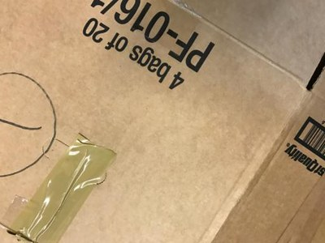
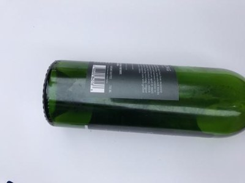
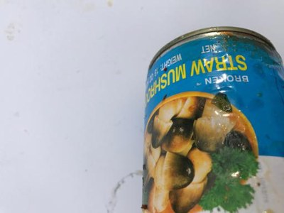
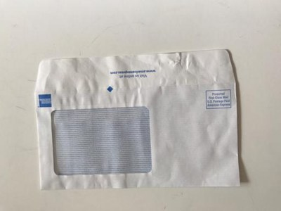
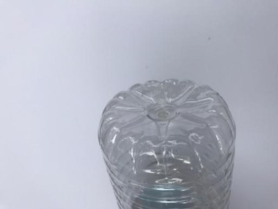
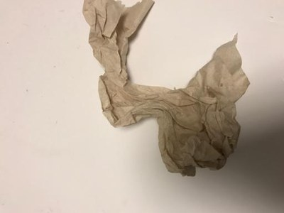
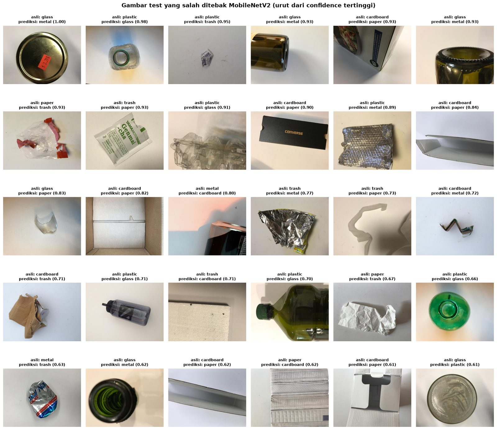

Memilah sampah cukup dengan satu foto
Pemilahan sampah di Indonesia masih banyak dilakukan manual, lambat, dan sering salah, padahal daur ulang butuh sampah yang sudah terpilah. Model ini mengenali 6 jenis sampah dari foto dan berjalan langsung di browser Anda.
Coba model
Atau pilih contoh gambar
dari test set, 2 per kelasHasil prediksi, 3 kategori teratas, dan cara membuang sampahnya akan muncul di sini.
Masalah dan tujuan
Indonesia menghasilkan puluhan juta ton sampah setiap tahun, dan banyak yang berakhir di TPA dalam keadaan tercampur. Pemilahan masih bergantung pada tenaga manusia di rumah tangga, TPS, dan bank sampah: lambat, melelahkan, dan sering salah karena tidak semua orang tahu cara membedakan jenis material. Padahal industri daur ulang membutuhkan sampah yang sudah terpilah per jenis. Sampah yang tercampur nilainya turun dan sulit diolah.
Tujuan: membangun model yang mengklasifikasikan foto sampah ke 6 kategori (kardus, kaca, logam, kertas, plastik, residu) sebagai dasar sistem pemilahan otomatis atau aplikasi edukasi pemilahan sampah.
Seberapa akurat dengan data terbatas?
Hanya sekitar 2.500 foto untuk 6 kelas. Apakah cukup untuk model yang andal?
Seberapa besar untungnya transfer learning?
Dibandingkan CNN yang dilatih dari nol dengan data yang sama.
Kelas mana yang paling sering tertukar?
Dan kenapa model bingung di pasangan kelas tersebut.
Model mana yang cocok untuk aplikasi nyata?
Menimbang akurasi, ukuran file, dan kecepatan, karena model dijalankan di browser.
Kriteria sukses: macro F1 di test set di atas 0,85, tidak ada kelas dengan F1 di bawah 0,70, dan model di bawah 30 MB. Macro F1 dipakai (bukan hanya akurasi) karena datanya tidak seimbang: macro F1 menghitung setiap kelas sama penting, sehingga kelas kecil seperti residu tidak bisa diabaikan.
Dataset
Dataset TrashNet berisi foto satu objek sampah di atas latar polos, difoto dalam ruangan dengan resolusi seragam 512 x 384 piksel. Enam pasang file ternyata identik tetapi punya label berbeda (misalnya leher botol kaca yang juga ada di folder logam), sehingga dibuang sebelum data dibagi.
Distribusi kelas
Kertas paling banyak (594), residu paling sedikit (137). Arahkan kursor untuk melihat pembagian per split.
Karena tidak seimbang, saat training kesalahan pada kelas kecil diberi bobot lebih besar (class weights). Residu mendapat bobot sekitar 3 kali rata-rata.
Contoh foto






Keterbatasan yang terlihat
- Latar seragam dan pencahayaan studio. Tempat sampah sungguhan jauh lebih ramai dan kotor.
- Satu objek per foto, bersih dan utuh.
- Data kecil, terutama residu yang hanya 137 foto dengan isi sangat beragam.
- Produk luar negeri. Kemasannya bisa berbeda dari sampah lokal Indonesia.
Pendekatan: transfer learning
Melatih model dari nol butuh jutaan foto. Transfer learning memakai model yang sudah belajar "cara melihat" dari 1,2 juta foto ImageNet, lalu mengajarinya membedakan jenis sampah. Ibaratnya seperti koki berpengalaman yang tinggal mempelajari resep baru, bukan belajar memasak dari awal.
Model pretrained ImageNet
Sudah pandai mengenali kucing, mobil, dan ribuan benda lain, tetapi belum tahu apa itu "kardus" atau "residu".
Feature extraction
Semua blok dibekukan. Hanya classifier baru yang dilatih (learning rate 1e-3), supaya bobot acaknya tidak merusak pengetahuan yang sudah ada.
Fine-tuning
Blok terakhir dibuka dan disetel halus dengan learning rate 10 kali lebih kecil (1e-4), supaya menyesuaikan diri ke tekstur sampah tanpa melupakan ImageNet.
Tiga model yang dibandingkan
A. CNN dari nol
Baseline, 1,2 juta parameter
- 4 blok konvolusi, semua bobot mulai dari acak
- Menunjukkan batas kemampuan tanpa pengetahuan awal
B. MobileNetV2 terpilih
Pretrained, 2,2 juta parameter
- Dirancang untuk HP dan perangkat ringan
- Fine-tuning 5 blok terakhir
C. ResNet50
Pretrained, 23,5 juta parameter
- Model besar sebagai pembanding "batas atas"
- Fine-tuning blok terakhir (layer4)
Pengaturan yang sama untuk semua model: augmentasi (crop acak, flip, rotasi kecil, variasi cahaya), class weights, optimizer AdamW, learning rate yang otomatis diturunkan saat stagnan, early stopping, dan mixed precision di GPU RTX 4060.
Hasil
Semua angka di bawah berasal dari test set: 379 foto yang tidak dipakai sama sekali selama training maupun saat memilih model, sehingga menjadi perkiraan paling jujur untuk foto baru.
Perbandingan tiga model
Transfer learning (B dan C) unggul jauh dari CNN dari nol. MobileNetV2 hampir setara ResNet50 dengan ukuran 10 kali lebih kecil.
| Model | Accuracy | Macro F1 | Parameter | Ukuran | GPU / foto | CPU / foto |
|---|
Waktu inference diukur di laptop pengembangan (batch 1, float32) dan sedikit berubah setiap kali diukur.
Kurva training
Garis tebal: validation. Garis putus-putus: train. Pilih model yang ingin ditampilkan.
Loss (lebih rendah lebih baik)
Accuracy
CNN dari nol belajar lambat dan berhenti di akurasi validation sekitar 0,71 (underfitting). Model pretrained langsung melampaui 0,8 sejak tahap 1 dan naik lagi setelah fine-tuning. Setelah itu akurasi train terus naik mendekati 1 sementara validation tertahan, tanda overfitting ringan, dan early stopping memilih epoch terbaik sebelum itu terjadi.
Confusion matrix
MobileNetV2 di test set. Baris: label asli, kolom: prediksi.
Metrik per kelas
Batang: F1 per kelas. Titik: precision dan recall.
Kelas yang paling sering tertukar
Kardus dan kertas
6 kardus ditebak kertas, 3 kertas ditebak kardus. Kardus tipis dan kotak kemasan bercetak permukaannya mirip kertas tebal, sementara lapisan bergelombang khas kardus sering tidak terlihat dari sudut foto.
Plastik ke kaca
6 plastik ditebak kaca. Botol dan wadah plastik bening sama-sama transparan dan memantulkan cahaya seperti kaca, apalagi botol plastik berwarna hijau.
Residu ke mana-mana
Residu adalah kelas terlemah (F1 0,70). Isinya campuran bungkus beraluminium, sachet kertas, dan plastik, sehingga mirip kelas lain, dan datanya paling sedikit.
Grad-CAM: apa yang dilihat model?
Area merah paling memengaruhi keputusan model. Kolom kiri dan tengah: prediksi benar, kolom kanan: prediksi salah.
Model melihat objek sampahnya, bukan background: leher botol, badan kaleng, lipatan bungkus. Secara kuantitatif, perhatian model di tepi gambar (area background) selalu di bawah rata-rata untuk semua kelas. Saat salah pun, model tetap melihat objek, hanya bagian yang dilihat menyesatkan, misalnya tulisan tercetak pada kardus yang mirip kertas.
Contoh salah prediksi
41 dari 379 foto test (10,8%) salah ditebak, diurutkan dari yang paling "yakin".

- Material transparan: plastik bening dan kaca saling tertukar.
- Kardus tipis vs kertas: kotak kemasan putih yang tidak memperlihatkan lapisan bergelombang.
- Permukaan mengilap: dasar botol gelap, bungkus foil, dan kaleng penyok bercetak warna-warni.
- Objek kecil atau terpotong: petunjuk bentuk hilang.
- Label yang diragukan: misalnya tutup toples logam yang dilabeli kaca.
Median confidence prediksi salah hanya 0,71, jauh di bawah prediksi benar (0,99). Karena itu demo di atas memberi peringatan saat model kurang yakin.
Uji ketahanan
Foto test diberi gangguan buatan untuk meniru kondisi nyata. Arahkan kursor untuk melihat berapa poin akurasinya turun.
Gelap: aman
Model pretrained hanya turun 1 sampai 2,5 poin, bahkan di kecerahan 35%. CNN dari nol runtuh sampai 51 poin karena bergantung pada warna dan kecerahan.
Blur: titik lemah
Blur berat menurunkan akurasi MobileNetV2 26,6 poin (ResNet50 12,1 poin). Tekstur seperti serat kardus dan kilap kaca hilang saat foto buram.
Rotasi: aman
Turun kurang dari 3,5 poin, karena sampah memang tidak punya orientasi tetap dan augmentasi sudah memasukkan rotasi.
Kesimpulan
Model terpilih, MobileNetV2, di-export ke ONNX (8,7 MB) dan dijalankan dengan onnxruntime-web. Prediksinya di browser identik dengan PyTorch, karena preprocessing di halaman ini meniru preprocessing saat training secara persis.
1. Seberapa akurat dengan data terbatas?
Dengan sekitar 1.760 foto training, akurasi test 89,2% dan macro F1 0,868. Sekitar 9 dari 10 foto dikenali dengan benar, selama kondisi fotonya mirip dataset.
2. Seberapa besar untungnya transfer learning?
Sangat besar: macro F1 naik sekitar 20 poin (0,666 menjadi 0,868) dan jumlah kesalahan turun hampir 3 kali, dengan waktu training lebih singkat.
3. Kelas mana yang paling sering tertukar?
Kardus dengan kertas (permukaan mirip) dan plastik dengan kaca (sama-sama transparan). Residu paling lemah karena isinya campuran dan datanya sedikit.
4. Model mana yang cocok untuk aplikasi nyata?
MobileNetV2: performa setara ResNet50 (selisih macro F1 di bawah 0,01) dengan ukuran 10 kali lebih kecil dan inference di CPU beberapa kali lebih cepat.
Kriteria sukses
| Kriteria | Target | Hasil | Status |
|---|---|---|---|
| Macro F1 di test set | > 0,85 | 0,868 | Tercapai |
| F1 per kelas terendah | ≥ 0,70 | 0,700 (residu) | Tercapai, tepat di batas |
| Ukuran model | < 30 MB | 8,7 MB | Tercapai |
| Waktu inference | < 1 detik | belasan ms | Tercapai |
Keterbatasan
- Dataset kecil (2.521 foto), residu hanya 20 foto di test set sehingga angka per kelas punya ketidakpastian besar.
- Foto studio dengan latar seragam. Akurasi di tempat sampah sungguhan kemungkinan lebih rendah.
- Hanya satu objek per foto, belum bisa menangani tumpukan sampah campuran.
- Belum diuji di foto nyata dari kondisi Indonesia, dan rentan terhadap foto buram.